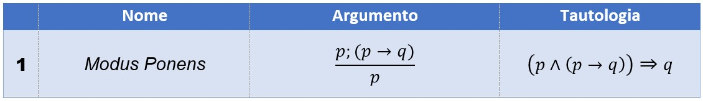
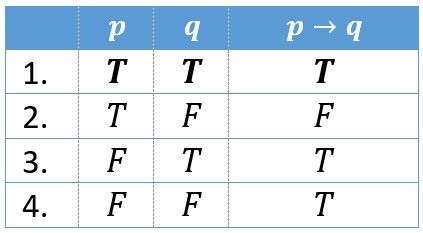
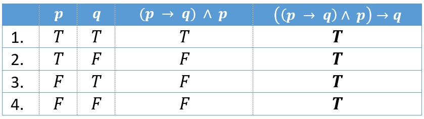
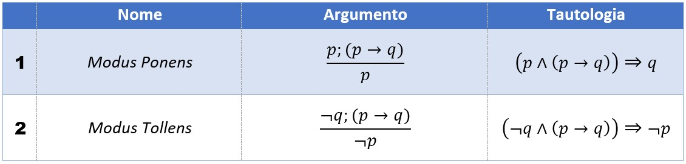
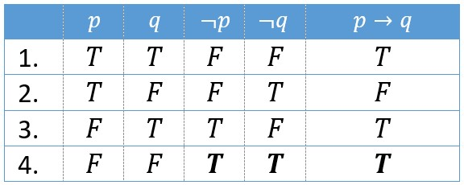
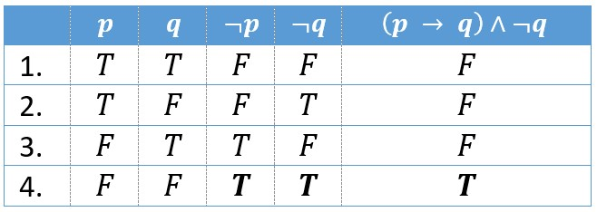
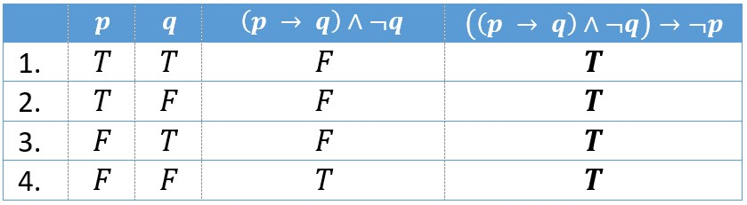

Sistemas Dedutivos
Frank Coelho de Alcantara -2020
Um pouco de história
O Sistema L foi desenvolvido por Edward John Lemmon, na primeira metade do Século XX. Como uma alternativa mais simples no método de dedução desenvolvido por Gerhard Karl Erich Gentzen, O Sistema G. O L é de Lemmon, assim como o G é de Gentzen. No final dos anos sessenta, Stephen Cole Kleene publicou uma variação deste sistema dedutivo que tem forte implicação na ciência da linguística computacional.
Formalismo
Alfabeto $\Sigma_L=\{\neg, \rightarrow, \{ P, Q, R, S,...\}, (,)\}$
Regras sintáticas.
- Toda variável proposicional é uma fórmula bem formada.
- Se $P$ e $Q$ são fórmulas bem formadas, então $\neg P$ e $(P\rightarrow Q)$ também são.
- Uma fórmula bem formada só pode ser obtida pelas regras acima.
Axiomas:
- $( P \rightarrow ( Q \rightarrow P ))$
- $(( P \rightarrow ( Q \rightarrow R )) \rightarrow (( P \rightarrow Q ) \rightarrow ( P \rightarrow R )))$
- $(( \neg Q \rightarrow \neg P ) \rightarrow ( \neg P \rightarrow Q )\rightarrow P)$
Só para lembrar
Todo axioma é uma tautologia mas, nem toda tautologia é um axioma.
Todo teorema é uma tautologia mas, e toda tautologia é um teorema.
Um argumento é válido se, e somente se, existe uma tautologia condicional (implicação) que pode ser associada a ele.
Provas
Axiomas:
- $( P \rightarrow ( Q \rightarrow P ))$
- $(( P \rightarrow ( Q \rightarrow R )) \rightarrow (( P \rightarrow Q ) \rightarrow ( P \rightarrow R )))$
- $(( \neg Q \rightarrow \neg P ) \rightarrow ( \neg P \rightarrow Q )\rightarrow P)$
No Sistema L podemos usar qualquer um dos axiomas e o Modus Ponens para provar qualquer argumento.
Para Lembrar: Modus Ponens
De longe a regra mais utilizada em inferência lógica. Permite deduzir uma tese $B$ a partir das premissas $A$ e $A \rightarrow B$.
Se estuda é aprovado, estudou logo é aprovado.
Podemos provar a validade do Modus Ponens de três formas diferentes.
Provando o Modus Ponens 1
Usando a tabela verdade do próprio argumento.
Usando a conjunção das hipóteses.

Provando o Modus Ponens 2
Usando a tabela verdade da tautologia equivalente.
Para representar esta fórmula enfatizando que é uma tautologia usaremos: $$((p \rightarrow q)\wedge p)\Rightarrow q$$
Modus Tollens
Permite deduzir a negação do antecedente $A$ a partir da negação de $B$ e da implicação $A\rightarrow B$.
Se chove, não vou a aula. Vou a aula logo não chove.
Exercício 1: Modus Tollens
Usando o mesmo processo de dedução que usamos para comprovar o Modus Ponens comprove a validade do Modus Tollens.
Prova de Argumentos
Sempre podemos provar um argumento utilizando a sua tabela verdade.
O uso de tabelas verdade é tedioso, cansativo e torna mecânico o processo de conclusão.
A forma ideal de resolver problemas de inferência, ou dedução, é utilizar as próprias propriedades da lógica.
Usamos argumentos cuja consequência já é conhecida, são chamados de Consequências Notáveis.
Exemplo 1
Prove o teorema $\vdash_L ((p \rightarrow q) \rightarrow (p \rightarrow p))$
Lembrando $P, Q, R, S, ...$ podem ser usados de forma irrestrita para representar qualquer fórmula bem formada.
Começamos do axioma 1: $( P \rightarrow ( Q \rightarrow P ))$ teremos: $[1] (p\rightarrow (q \rightarrow p))$
2. Partimos para o axioma 2:$(( P \rightarrow ( Q \rightarrow R )) \rightarrow (( P \rightarrow Q ) \rightarrow ( P \rightarrow R )))$ onde $P \equiv p$, $Q \equiv q$ e $R \equiv p$ neste caso teremos $[2] (( p \rightarrow ( q \rightarrow p )) \rightarrow (( p \rightarrow q ) \rightarrow ( p \rightarrow p )))$
Agora usamos o Modus Ponens para $P \equiv (p\rightarrow (q \rightarrow p))$ e $Q \equiv (( p \rightarrow q ) \rightarrow ( p \rightarrow p ))$
Como $[1]$ e $[2]$ são axiomas $(( p \rightarrow q ) \rightarrow ( p \rightarrow p ))$ é válido.
Exemplo 2
Prove o teorema $\vdash_L (p \rightarrow p)$
Começamos do axioma 1: $( P \rightarrow ( Q \rightarrow P ))$ para $P \equiv p$ e $Q \equiv (p \rightarrow p)$ teremos: $[1] (p\rightarrow ((p \rightarrow p) \rightarrow p))$
2. Partimos para o axioma 2:$(( P \rightarrow ( Q \rightarrow R )) \rightarrow (( P \rightarrow Q ) \rightarrow ( P \rightarrow R )))$ onde $P \equiv p$, $Q \equiv (p \rightarrow p)$ e $R \equiv p$ neste caso teremos $[2] (( p \rightarrow ( (p \rightarrow p) \rightarrow p )) \rightarrow (( p \rightarrow (p\rightarrow p) ) \rightarrow ( p \rightarrow p )))$
Agora usamos o Modus Ponens para $P \equiv (p\rightarrow (p \rightarrow p) \rightarrow p)$ e $Q \equiv (( p \rightarrow (p\rightarrow p) ) \rightarrow ( p \rightarrow p ))$ e temos $[3] (( p \rightarrow (p\rightarrow p) ) \rightarrow ( p \rightarrow p ))$
Podemos aplicar o axioma 1 com $P \equiv p$ e $Q \equiv p$ para obter $[4] p \rightarrow (p \rightarrow p)$.
Aplicando o Modus Ponens em $[3]$ e $[4]$ temos $p \rightarrow p$ é válida.
Exercício 2
Provamos que $\vdash_L (p \rightarrow p)$ é um argumento válido, então podemos usar $p \rightarrow p$ a qualquer momento. Neste caso, dizemos que $(p \rightarrow p)$ é um lema. Prove $\vdash_L (\neg p\rightarrow p)\rightarrow p$
Exemplo 3: hipóteses
Se no problema forem dada hipóteses, não podemos alterar nenhuma destas formulas para provar o argumento. Contudo, ainda poderemos usar os axiomas e eventuais lemas. Prove a validade de $P \rightarrow (Q \rightarrow R), P \rightarrow Q \vdash_L P \rightarrow R$
Foram dadas as hipóteses:$[1]P \rightarrow (Q \rightarrow R), [2]P \rightarrow Q$ e precisamos provar $\vdash_L P \rightarrow R$
Axioma 2:$[3](( P \rightarrow ( Q \rightarrow R )) \rightarrow (( P \rightarrow Q ) \rightarrow ( P \rightarrow R )))$
Usando o Modus Ponens para $[1]$ e $[3]$ temos $P \equiv P → (Q → R)$ e $Q \equiv (P \rightarrow Q) \rightarrow (P \rightarrow R)$
Como $(P \rightarrow Q) \rightarrow (P \rightarrow R)$ é verdade podemos usar Modus Ponens novamente em $[2]$e$[4]$
provando $P → R$
Exercício 3
Prove a validade de $P → ((Q → P) → R) \vdash_L P → R$
Respostas dos Exercícios
Exercício 1: Modus Tollens
  Exercício 2:
Prove $\vdash_L (\neg p\rightarrow p)\rightarrow p$
Nós já temos um Lema descoberto: $P \rightarrow P$ se fizermos $P \equiv \neg P$ teremos $\neg p \rightarrow \neg p$.
Pegando axioma 3 $((\neg Q \rightarrow \neg P) \rightarrow (\neg P \rightarrow Q)\rightarrow P)$ e fazendo $P\equiv p$ e $Q \equiv p$ teremos $((\neg p \rightarrow \neg p)\rightarrow (\neg p \rightarrow p)\rightarrow p)$
Agora, aplicamos Modus Ponens com $P \equiv (\neg p \rightarrow \neg p )$ e $(P\rightarrow Q) \equiv ((\neg p \rightarrow \neg p) \rightarrow ( \neg p \rightarrow p) \rightarrow p)$ e provamos $Q \equiv (\neg p \rightarrow p) \rightarrow p$.
Exercício 3:
Prove a validade de $P → ((Q \rightarrow P) \rightarrow R) \vdash_L P \rightarrow R$
Nós já provamos que $P\rightarrow (Q \rightarrow R),P\rightarrow Q \vdash_L P\rightarrow R$
Então podemos pegar este lema e fazer uma instância dele com $P\equiv P$, $Q\equiv (Q\rightarrow P)$ e $R\equiv R$. Feito isso teremos: $[1]: P \rightarrow ((Q \rightarrow P) \rightarrow R),P \rightarrow (Q \rightarrow P) \vdash_L P \rightarrow R$.
O que precisamos provar é $P → ((Q \rightarrow P) \rightarrow R) \vdash_L P \rightarrow R$
A hipótese dada é $P \rightarrow ((Q \rightarrow P) \rightarrow R)$
O axioma 1 é $P \rightarrow (Q \rightarrow P)$ que é uma das hipóteses de $[1]$
A segunda hipótese de $[1]$ é justamente a hipótese que nos foi dada:$P \rightarrow ((Q \rightarrow P) \rightarrow R)$
E em $[1]$ já provamos $P \rightarrow R$
Todas as proposições de $P → ((Q \rightarrow P) \rightarrow R) \vdash_L P \rightarrow R$ são validas, o argumento é válido.
Material de apoio
Você pode baixar o material de apoio clicando aqui
Obras Citadas
AHO, A. V. et al.
Compiladores: princípios, técnicas e ferramentas.
2º. ed. Boston, MA, USA: Pearson Education Inc. , 2007.
CASS, S. The 2016 Top Programming Languages. IEEE
Spectrum, 2016. Disponível em:
http://spectrum.ieee.org/computing/software/the-2016-top-programming-languages.
Acesso em: 22 Set. 2016.